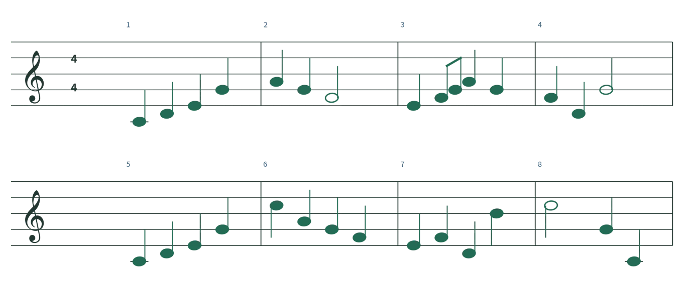

本文へ移動
音楽理論を耳と手で学ぶ
目次
読み方
聴取索引
地図
音の実験室
譜例と資料
譜例とダウンロード
耳で確かめる譜例
音量を最小近くから調整して再生してください。演奏の音源は各音をブラウザで合成します。

《窓辺》の旋律譜。第4小節と第8小節の終止を比較できます。
《窓辺》旋律のみ
《窓辺》和声付き
二声の対位法
停止
旋律の分析を読む
二声対位法の譜例と解説
分野をつなぐ四つの音例
音源を聴いてから章へ戻り、変えたパラメータと、耳に残った違いを照合できます。
《三つの椅子》
高音の三打を固定して、拍の頭を移す。
《継ぎ目》
三声が同じ音色になった瞬間を探す。
《十二枚の影》
強度スペクトルが一致する二つの打点列を聴き分ける。
《三つのミ》
三種類の長三度で、うなりの速度を比べる。
作業用ファイル
分野をつなぐ増補版 PDF（元の章番号）
《窓辺》旋律譜とコード記号（MusicXML）
Pico用の演奏スクリプト（Python）
うなりをWAVにする生成例（Python）
音の実験室・4小節のWAV書き出し